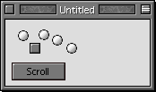
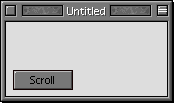

Tips
Welcome to the new Tips section. In this issue, I've added some sections that are more "How To" oriented, such as How to use the scroll method. If this disturbs you, then live with it.
Tip #1 - How to use the Scroll Method
| One of the more interesting changes in r36 was the addition of a Canvas.Scroll
method. Here's the syntax: Scroll(deltaX as integer, deltaY as integer, left as integer, top as integer, width as integer, height as integer, scrollControls as Boolean) This method allows you to a canvas to scroll easily. Essentially, what it does is to change the coordinates for the Canvas, i.e. the top left is -10, 5 instead of 0,0. More interesting than this is the scrollControls property. The reference says that this determines whether or not controls on top of the canvas scroll as well. To try this out, I whipped up a simple project that used the scroll method. Screenshots can be found to your right. The code for the scroll button at the right is this: Canvas1.Scroll 100, 0 This one line hides all five controls over the canvas just as effectively as uses five Control.Visible=False statements. If you had tried this with a group box, it wouldn't have worked. This is an excellent way to group and move controls, and it is also a good way to manipulate graphics. |
  Before and After. The controls haven't been hidden, they've just been scrolled off the right edge of the canvas that they're on. This would've taken five lines of code normally, but with scroll, it's only one. |
Tip #2 - Don't restart, Interrupt!
One of the nastiest things about RB is how much it crashes, especially with "Type 10" errors. It displays a black and white box that lets you restart. However, if you can still move the mouse, then there is hope!!! Simply press Command-Power (not Cmd-Ctrl-Power) to go into Interrupt mode (if you have MacBugs installed, then you'll drop to that). A new window will come up with a greater than sign. Simply type "G FINDER" to go back to the finder and quit RB without restarting the whole computer. If it works, then save the rest of the stuff you have open before opening RB again. This trick works for apps besides RB too.
Tip #3 - Use Confirm, and InputBox classes
RealBasic does have a MsgBox method, but it lacks some other features that Visual Basic has built-in: A confirm function (This is integrated into the MsgBox function in VB), and an InputBox function. Fortunately, with RB's great class system, it's easy to make these on your own. Simply make two windows: One for a confirm box (w/ a yes and no button), and one for an input box.
I could explain how to do this further, but I've decided to spare you the boredom. If you downloaded this issue as a StuffIt archive, then you already have these classes (in the Confirm and InputBox) folder. If you're viewing this on the internet, click here to download them as a binhexed file.